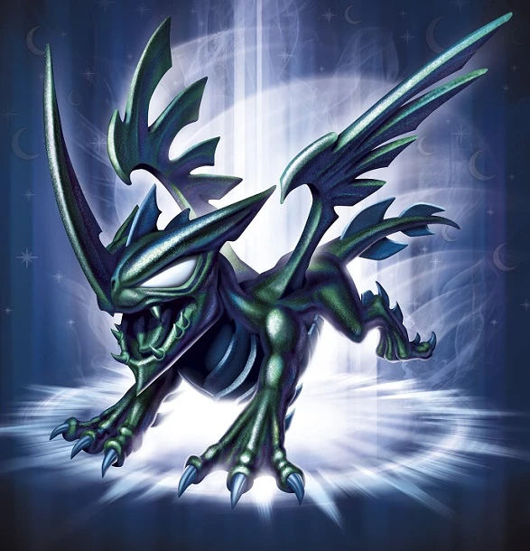
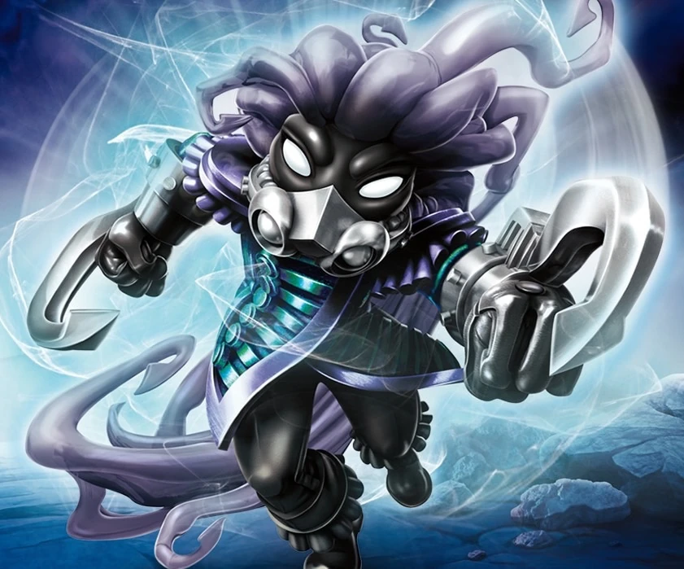
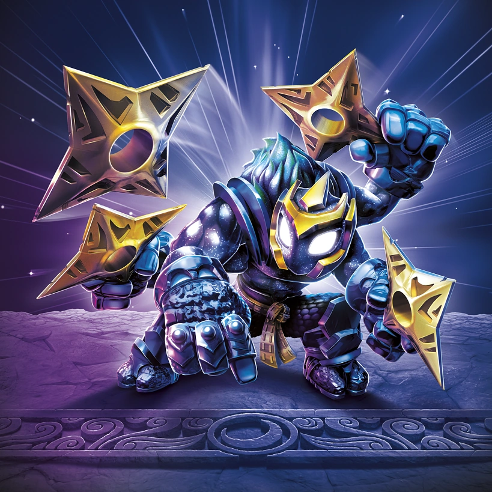

Knight Mare
Before the destruction of the Core of Light left her stranded in the Dark Realm, Knight Mare was one of the Dark Centaurs who guarded The Oracle of Stones – an enchanted game of Dark Skystones that could predict the future. When it was stolen by an unknown force, Knight Mare was called upon to retrieve it. She knew it would be dangerous because if the Oracle was asked the wrong questions seven times, it would unleash a terrible curse upon all of Skylands. Fortunately, she found it in a cave – with a gang of Bicyclopes about to ask their seventh wrong question. With no time to lose, she charged forward, beating the fierce Bicyclopes and saving Skylands from the terrible curse. Now having joined the Trap Team, Knight Mare uses her hunting skills and Traptanium Lance to bring down evil everywhere!

Blackout
Blackout hails from the Realm of Dreams, where the collective imagination of all the creatures in the universe come together to create beautiful wonders... and terrible nightmares. At a young age, he was recruited into the Dark Stygian – a Dragon Clan whose chief responsibility was to create nightmares for evil creatures as a way to discourage them from doing more villainy. But the clan began to abuse their power, and soon spread nightmares far and wide for its own amusement. But Blackout would not stand for it. So he learned to teleport directly into the nightmares the clan created and fought the creatures within. Eventually, the nightmares reached as far as Master Eon, who witnessed Blackout’s courage within his own dreams. After helping him put a stop to the Dark Stygian, Eon then made Blackout a Skylander, serving as the protector of the Realm of Dreams and beyond!

Nightfall
Nightfall was a Dreadwalker from Fogshadow Tower, a mysterious fortress in the middle of the Poison Sea. While most Dreadwalkers stayed within the noxious cloud they called home, Nightfall preferred to dive into the black abyss and hunt the dark monsters that threatened her people. One day, as she was exploring a deep cavern in her submarine, the Sea Shadow, Nightfall came upon an enormous object that pulsed with a strange energy. It was gigantic, and before she could comprehend what she was looking at, it hatched! Out came a creature 100 times larger than anything she had ever seen! She fired the engines and raced back to warn her people. Just as the last citizens boarded an evacuation ship, the colossal head of the Leviathan broke the surface of the water and let out a terrible roar! Without hesitation, Nightfall rushed towards the monster, blasting it with everything she had while the others made their escape. This act of heroism caught the attention of Master Eon, and the rest is Skylander history!

Starcast
No one knows where Starcast came from, including Starcast himself! He was first seen falling out of the sky and landing directly on top of Master Eon, after he had made a wish for a Ninja Master to train the new generation of Skylanders. While it appeared that Eon’s wish had come true, it was later revealed that Pop Fizz had simultaneously made a wish to get out of anger management lessons with the old Portal Master. Therefore, it was impossible to determine if Starcast was the result of one wish or the other. But after a brief martial arts display, it was clear to all that the mysterious Starcast was a very skilled ninja warrior. And seeing as how Master Eon had to walk around in crutches for the next few weeks, it was also clear that anger management class would have to be postponed – so it was a win-win!
Hood Sickle
Skylanders Trap Team
Hood Sickle was summoned by the Dreamcatcher as a surprise to stop the Skylanders' progress at Telescope Towers. The reaper was defeated despite his teleportation abilities and was captured.
Upon returning to Skylanders Academy with the reaper, Pain-Yatta, and Dreamcatcher, the Skylanders took him inside the school to the Hat Shop for his Villain Quest with Hatterson, who had arrived for its grand opening after they, Mags, and Cali returned from Rainfish Riviera with the inventor's Information Squid, which happened to be Kaos in disguise and subsequently offered his assistance to the Academy. The quest was called "Hatastrophe!", where the Molekin explained to the heroes that the Trolls had been making counterfeit hat machines that pop out non-magical hats and had been selling them on the black market, and needed Hood Sickle to shut the operation down. Afterwards, he was awarded with Hatterson's thanks and a new oufit, and told him and the Skylanders to come by his store anytime with new hats for sale.
Skylanders Imaginators
At first glance, it’s easy to be frightened by Hood Sickle. Some say it’s his imposing stature that freaks them out. Others are unnerved by his menacing hood. But most just try to stay away from his long, sharp scythe – and it didn’t help that he had a bad habit of disappearing and then suddenly popping up behind unsuspecting people. In fact, the Trap Masters that locked him away in Cloudcracker Prison hoped they would never have to see him again. But Master Eon thought there might be a chance for Hood Sickle to change his ways. Everyone said Eon was crazy, but after spending time with the mysterious creep, Eon learned that Hood Sickle was actually not a bad guy – just really super spooky. Hood Sickle took his job of terrifying others very seriously, and Eon believed that perhaps he could bring a similar dedication to teaching others as a Sensei. Plus, he figured that Skylanders in training would certainly pay attention in his classes. This has all proven true, and Hood Sickle now teaches Sentinel Imaginators, who definitely hang on his every word. Or else.